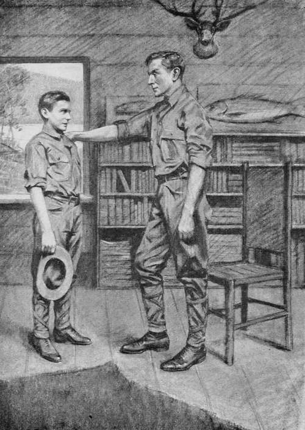

First Impressions. Continued
Description
This section is from the book "The Boy Scouts of Woodcraft Camp", by Thornton W. Burgess. Also available from Amazon: The Boy Scouts Of Woodcraft Camp.
First Impressions. Continued
" My boy," said the older lad earnestly, " right there lies the difference between success and failure—knowledge—the know how—the know why—the know when. Knowledge is power. It is better than bull strength. You knew how to make the most of what muscle you have got, and you won. You'll find that's the answer all through life. The man with knowledge and the power to apply it is top of the heap every time. Take these big woods here—how long do you suppose a greenhorn from the city dropped in the middle of 'em alone, with nothing but gun and blanket, would live? But take a fellow like Big Jim, with his knowledge of the wilderness and wilderness ways, and he'd hit the nearest settlement in three days and live like a lord all the way. Now, if you're ready I'll show you the way to the office. By the way, I'm going to ask Dr. Merriam to put you in my tribe; I like your style."
The " office " was a small detached cabin which had formerly been the headquarters of the logging camp boss. It was divided into two rooms by means of burlap curtains. In the front room was a desk, a plain deal table, three rustic chairs and book shelves occupying two-thirds of the wall space. The head of a magnificent ten-point buck looked down from above the fireplace. Over the books were mounted specimens of salmon, trout, bass and muskelonge. Mounted specimens of rare birds, a case of butterflies wholly unlike any Walter had ever seen, and which he suspected were from distant lands, specimen stones and minerals from the surrounding mountains, added to the fascination of the room. Before the fireplace lay the skin of a huge bear, and two tanned deer hides were spread on the floor. In one corner stood a collection of guns, rifles, paddles, fishing-rods and landing nets which caught the boy's eager eyes the instant he entered.
Through the parted curtains he had a glimpse of the same primitive sleeping arrangement, namely a box bunk, that he had found in the big cabin where he had left his duffle. Could he have peeped farther within he would have found a neat single iron bedstead with a hair mattress and snowy counterpane, a dainty white bureau, low, comfortable rocking-chair, sewing-machine and other evidences of feminine comfort, for, though Dr. Merriam religiously insisted on having for himself nothing more luxurious than he gave his " boys," the comfort of Mrs. Merriam—she was " Mother " Merriam to the whole camp in the affections of the boys—was another matter, and no pains were spared to make things pleasant and comfortable for her. In fact, not only the boys, but the guides and others attached to the camp vied with each other in showing her little attentions and waiting upon her.
As Walter and Louis entered " Mother" Merriam came forward at once to greet the newcomer, and while Loui3 talked with the doctor for a few minutes this quiet, sweet-faced, tactful little woman put the newcomer so at his ease that when Louis finally bade his superior good-morning and went out, Walter turned to meet the head of the camp wholly free from the awe with which he had entered the door not five minutes before.
" Upton," said the doctor, " Woodhull has just requested that you be assigned to his 'tribe,' an honor which you do not appreciate now, but which you will later. The camp is divided into four patrols or ' tribes,' each under the leadership and direction of one of our oldest and most trustworthy boys, known as 'chiefs.' Woodhull is chief of the Delawares, and Seaforth, whom you met with the launch, is chief of the Algonquins, the two tribes occupying the big cabin known as Wigwam No. 1, to which Buxby showed you on your arrival. Wigwam No. 2 is occupied by the Senecas and Hurons, under Chiefs Avery and Robertson. The rules of the camp are few and simple and every boy is put on his honor and is trusted to live up to them. Reveille is sounded at five o'clock every morning, except Sunday, when it is an hour later. At five-thirty on week-days and six-thirty on Sunday mess is served to two of the tribes and half an hour later to the other two, the wigwams alternating in the order of service.
" A detail from each wigwam is assigned to police the camp, that is, clear up all rubbish and keep the camp in order, wash dishes and chop fire-wood. Noon mess is served from twelve to one o'clock and evening mess from five-thirty to six-thirty. At nine o'clock 'taps ' is sounded, which means 'lights out' and every boy in bed.
" Each boy is expected to look after the making up of his own bed. There are certain defined limits on shore and on the lake be-yond which no boy may go without a permit from his chief, sanctioned by me.
" The building of fires at any time or place is strictly prohibited save when accompanied by a guide or chief. Smoking is not allowed. Violation of either of these two rules is sufficient cause for expulsion from camp. Boys who cannot swim are not allowed in the boats or canoes unless accompanied by an older competent person, until they have learned to care for themselves. The carrying or use of firearms is forbidden except at the rifle range, where instruction is given daily by one of the guides. From time to time there will be 1 special duty ' squads, such as the surveying squad, forestry squad, logging squad, and others on which boys are expected to serve willingly, and in the performance of these duties they will be taught many of the essentials of woodcraft.
" You will report this afternoon to Mr. Medcraft, our physical instructor, for examination, and will be expected to follow his recommendations for daily exercise. Big Jim has told me of your encounter at Upper Chain. My boy, I rejoice in the manliness and courage, in the sense of fair play, which led to your defense of the weak. Of all men the bully is most contemptible. No bullies are allowed in this camp, and, Upton, no fighting, unless all other means of settling a quarrel prove futile. Then it is fought out with gloves in the presence of the whole camp and with an unbiased referee. It has happened but once ; I hope it will not happen again. I mention this now, for I fear that you will find that you have established a reputation as a fighter, and such a reputation often leads one into difficulties which otherwise might be avoided.
"Tell Him You Are To Be A Delaware"
" We are glad to have you as a member of Woodcraft Camp, and I hope we shall make a first-class scout and a thorough sportsman and woodsman of you. I will not add ' gentleman,' for we feel that every boy is that when he comes to us. If you are interested in any special branch of nature study come and consult me freely that I may aid you in its pursuit.
" Now you may report to Chief Woodhull, and tell him you are to be a Delaware. He will inform you as to the minor rules of the camp and our methods of learning the most from this close communion and association with nature. We want you to go home in the fall feeling that you have had the best time a red-blooded boy could have, and that the summer has been profitable as well."
With a pleasant smile the doctor shook hands warmly once more and Walter started for the wigwam, secretly elated that he was to be under Woodhull, and that he was to be a Delaware, the tribe of Uncas and Chingach-gook. He found Woodhull waiting for him. The chief greeted him pleasantly.
" So the big chief (that's what we call the doctor) has made a Delaware of you? I'm glad of that."
" So am I," responded Walter.
" Now the first thing," the other continued, "is to get acquainted with the wigwam and stow away your duffle. The Delawares have the east side, and the Algonquins the west. Your number is the skiddoo number, twenty-three, for bunk and locker, and I hope you'll make it a lucky number for the tribe. Stow your duffle in your locker, and I'll show you around the camp and make you acquainted with some of the boys. By the way, Upton, do you go in for athletics, besides boxing? "
Walter admitted that he ran a little, being best at the mile, was fairly good at the running broad jump, had once won a boy's canoe race, and had practiced a lot at a short range target with a small rifle.
His chief received the information with manifest pleasure. " You see," he explained, " we have a big field day in August, and there is a lot of rivalry between the tribes, and especially between the two wigwams. A mounted deer's head is offered this year to the wigwam scoring the greatest number of points in woodcraft during the summer and in the field day sports, and we want it over our fireplace. The biggest fish caught each day counts five points and the biggest for the week fifteen points; the best photograph of wild animals or birds made during the summer counts twenty-five points; fifteen points each are scored for the rarest botanical specimen, best mineral specimen, largest number of birds positively identified, best collection of insects and largest number of trees identified. Any exceptional feat of woodcraft scores to the benefit of the wigwam. The championship banner goes to the tribe winning the largest number of points in the successful wigwam. The Hurons won it last year, but, son, the Delawares have got to get it this year. Then there are individual prizes well worth mentioning. We shall expect you to miss no opportunity to score for the honor of the tribe and wigwam. Our wigwam leads now, but the Algonquins have twenty points the best of the Delawares. It's up to you to do your prettiest to help us get their scalps. By the way, don't be surprised if things are made some interesting for you to-night. Whatever happens, keep your nerve and don't show the white feather."
Beyond this mysterious hint Woodhull would vouchsafe no information, and Walter could only guess at what might be in store for him.
The tour of the camp included the big mess cabin, with the cook house in the rear, where they had a glimpse of Billy and the chip pile, and the cabin of the three guides, where they found Big Jim very much at home, the other two being out with fishing parties, and where Walter was introduced to Mr. Medcraft, the physical director, and to Mr. Burnham, a young Y. M. C. A. man who was Dr. Mer-riam's assistant. These shared the cabin with the guides. They then went down to inspect the boats and canoes. Several fishing parties were just coming in, and Walter was introduced to some of his fellow tribesmen, as well as to members of the other tribes.
As they turned back to the wigwam the bugle sounded for noon mess, and boys appeared .as if by magic from every direction in a mad rush for the wash-house. Presently Walter found himself seated at a long table in the mess room, an agate-ware plate and cup before him, and an abundant supply of plain but well cooked food, in which deliciously browned trout were evidence of the practical lessons taught at Woodcraft Camp.
Continue to: